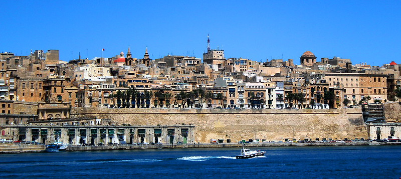
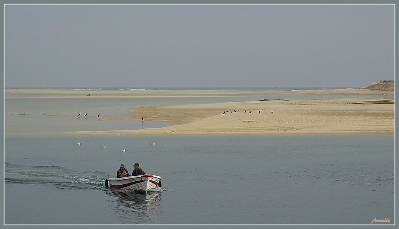
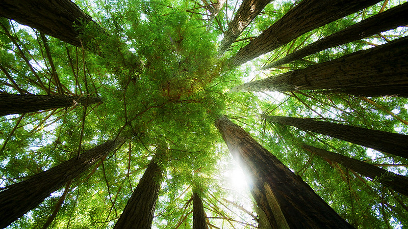

Городской пейзаж - это не просто хаос и суета, это шкатулка мгновений, где красота скрывается в деталях: в тихом фонтане скверика, в легком осеннем дожде, струящемся по старым кварталам, в лучах солнца, играющих в листве. Это меланхоличные прохожие, прогуливающиеся по брусчатке, разноцветные крыши домов и фасады, создающие уникальную городскую мозаику. В городском пейзаже течет свое время, со своей атмосферой: утренних улиц, дождливых или заснеженных мостовых, таинственной тишины и загадочного света фонарей. Иногда современным художникам удается запечатлеть это настроение, эту атмосферу, передавая на своих полотнах не только огни рекламы и свет фар, но и душу города, его скрытую поэзию.

Фотопортрет - это больше, чем просто изображение. Это окно в душу человека, возможность заглянуть в его внутренний мир, увидеть его индивидуальность и историю.
Хороший фотограф – это не просто мастер объектива, но и тонкий психолог. Он умеет запечатлеть не только черты лица, но и характер, духовную составляющую человека, делая портрет не просто фотографией, а глубоким и многогранным произведением искусства.

Пейзажная фотография - это не просто запечатление природы, это способ увидеть мир по-новому и насладиться его красотой. Она позволяет запечатлеть величие гор, живописность полей, завораживающие закаты и восходы, передать то, что словами описать невозможно.Пейзажная фотография учит нас замечать красоту в деталях, отвлекает от повседневной рутины и помогает увидеть мир свежим взглядом. Она становится отдушиной от городской суеты, способом релаксации и погружения в мир природы, где время течет иначе, а душа находит успокоение.
